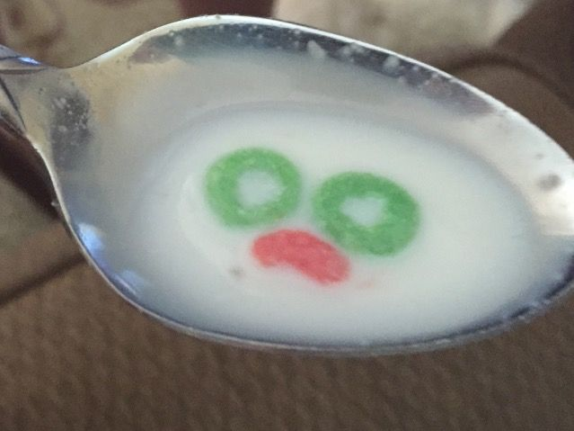

Sad Cereal

Description
How to make a pathetic bowl, or in this case, a pathetic mug of cereal.
Ingredients
- A few handfuls of Fruit loops, Coco Pops, Rice Bubbles, or whatever
other stale box of cereal you have lying around your shitty home.
- Pint of milk
- Sugar
- Rat poison
Steps
- Take a few handfuls of Fruit Loops, Coco Pops, Rice Bubbles, or whatever
other stale box of cereal you have lying around your shitty home and
place into an old mug.
- Drink gulp of milk from carton and then spit it into the mug.
Repeat until milk is overflowing over edge of mug.
- Add multiple tablespoons of sugar to cereal you sad little man
- Stir rat poison into cereal.
- Bon Appetit!